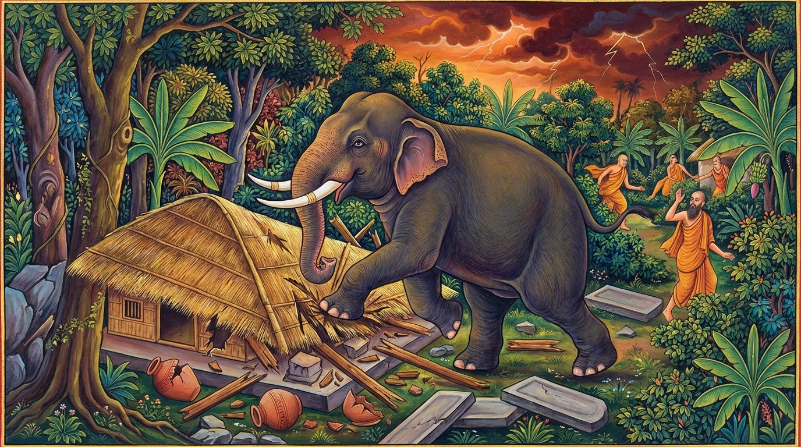

1. ඉන්දසමානගොත්ත ජාතකය (161)
“න සන්ථවං කාපුරිසෙන කයිරා” (අසත්පුරුෂයා සමඟ මිත්රසන්ථවය නොකළ යුතුය) යන මේ ධර්ම දේශනාව බුදුරජාණන් වහන්සේ ජේතවනාරාමයෙහි වැඩවාසය කරන සමයෙහි එක් අකීකරු භික්ෂුවක් අරබයා වදාළ සේක. එම කථා පුවත නවක නිපාතයෙහි ‘ගිජ්ඣ ජාතකයෙහි’ (ජාතක අංක 1.9.1 ආදියෙහි) මතු සඳහන් වන්නේය. බුදුරජාණන් වහන්සේ ඒ භික්ෂුව අමතා, “මහණ, නුඹ පෙරත් අකීකරුකම නිසා නුවණැත්තන්ගේ වචනය පිළි නොගෙන, මත් ඇතකුගේ පාවලින් සුනුවිසුනු කරන ලද්දේය” යි වදාරා අතීත කථාව ගෙනහැර දැක්වූ සේක.
යටගිය දවස බරණැස් නුවර බ්රහ්මදත්ත රජු රාජ්ය කරන සමයෙහි බෝසතාණන් වහන්සේ බමුණු කුලයෙහි උපත ලබා, වැඩිවියට පත්ව ගිහිගෙයි වාසය අත්හැර තවුස් පැවිද්දෙන් පැවිදි වූහ. උන්වහන්සේ පන්සියයක් තාපසවරුන්ට නායකව හිමාල වන පෙදෙසෙහි වාසය කළ සේක. එකල ඒ තාපසවරුන් අතර ‘ඉන්දසමානගොත්ත’ නම් අකීකරු, අවවාද නොපිළිගන්නා එක් තාපසයෙක් සිටියේය. හෙතෙම මව මළ එක් ඇත් පැටවකු පෝෂණය කළේය. බෝසතාණන් වහන්සේ ඒ බව අසා ඔහු කැඳවා, “නුඹ ඇත් පැටවකු පෝෂණය කරන බව සැබෑදැ?”යි විචාළ සේක. “එසේය ආචාර්යයෙනි, මව මළ එක් ඇත් පැටවකු පෝෂණය කරමි”යි ඔහු පිළිතුරු දුන්නේය. එවිට බෝසතාණන් වහන්සේ, “ඇතුන් නම් වැඩුණු පසුව තමන් පෝෂණය කළවුන්වම මරණයට පත් කරති. එනිසා ඒ ඇත් පැටවා පෝෂණය නොකරන්නැ”යි අවවාද කළහ. “ආචාර්යයෙනි, ඒ ඇතාගෙන් තොරව මට ජීවත් විය නොහැකිය”යි ඔහු කීවේය. “එසේ නම් මතු සිදුවන දෙය නුඹටම වැටහේවි”යි බෝසතාණන් වහන්සේ පැවසූහ. ඔහු විසින් පෝෂණය කරනු ලැබූ ඒ ඇතා පසුකලෙක විශාල ශරීරයක් ඇත්තෙක් විය.
ඉක්බිති එක් කලෙක ඒ තාපසවරු වන මුල් හා පලාඵල නෙළාගැනීම පිණිස දුර බැහැර ගොස් එහිම දින කීපයක් ගත කළහ. මේ අතර ඇතා ද දකුණු දිගින් හමා ආ සැඩ සුළඟ වැදීමෙන් මද කිපුණේ, තවුසාගේ පන්සල විනාශ කොට, පැන් කළය බිඳ දමා, ගල් පුවරුව ඉවතට විසි කර, (ඇඟ පත තබා සිටින) ආලම්බන පුවරුව උදුරා දමා, “ඒ තාපසයා මරා දමාම යන්නෙමි”යි සිතා වන ලැහැබට පිවිස තාපසයා එන මග බලමින් සැඟවී සිටියේය. ඉන්දසමානගොත්ත තවුසා ඇතාට ද ආහාර රැගෙන පිරිසට පළමුව එනුයේ, ඇතා දැක පෙර පුරුදු හිතවත්කමෙන්ම ඇතා ළඟට ගියේය. ඉක්බිති ඒ ඇතා වදුලෙන් නික්ම අවුත් තවුසා සොඬින් අල්ලා බිම හෙළා, හිස පයින් පාගා ජීවිතක්ෂයට පත් කොට, සිරුර පොඩිකර, කුඤ්චනාද කොට කැලයට පිවිසියේය. සෙසු තවුසෝ ඒ පුවත බෝසත් තවුසාට සැළ කළහ. බෝසත් තවුසා, “අසත්පුරුෂයන් සමග ආශ්රය නොකළ යුතුය”යි පවසා මේ ගාථාවන් වදාළ සේක.

“අර්ථය දන්නා වූ ආර්ය පුද්ගල තෙමේ අනාර්ය වූ අසත්පුරුෂයා සමග මිත්රසන්ථවය (ඇසුර) නොකරන්නේය. ඉන්දසමානගොත්ත තවුසා මැරූ හස්තියා මෙන්, අනාර්යයා බොහෝ කාලයක් එක්ව වාසය කළත් නපුරක්ම කරන්නේය.”
“ශීලයෙන් ද, ප්රඥාවෙන් ද, ශ්රැතයෙන් ද යම් තැනැත්තෙකු මා හා සමාන යයි දන්නේ නම්, ඔහු හා සමගම මිත්රත්වය කළ යුතුය. සත්පුරුෂයා හා එක්ව වාසය කිරීම ඒකාන්තයෙන්ම සුව එළවන්නේය.”
යනුවෙන් මෙම ගාථාවන් වදාළ සේක.
එහි අර්ථ විවරණය මෙසේය: න සන්ථවං කාපුරිසෙන කයිරා: පිළිකුල් කටයුතු, කිපෙනසුලු පුරුෂයා සමඟ තෘෂ්ණාවෙන් හෝ මිතුරුකමින් ඇසුරක් නොකළ යුතුය. අරියො අනරියෙන පජානමත්ථං: ආර්යයෝ සතර දෙනෙකි. එනම්:
- ආචාර අරිය (හැසිරීමෙන් ආර්ය වූ)
- ලිංග අරිය (වේශයෙන් ආර්ය වූ)
- දස්සන අරිය (දැකීමෙන් ආර්ය වූ - සෝවාන් ආදී)
- පටිවෙධ අරිය (අවබෝධයෙන් ආර්ය වූ - රහත්)
මේ අතුරින් යහපත් ආචාර ධර්ම ඇති තැනැත්තා (ආචාර අරිය) මෙහිදී අදහස් කෙරේ. අර්ථය හා අනර්ථය තෝරා ගැනීමෙහි දක්ෂ, යහපත් පැවැත්මෙහි පිහිටි ඒ ආර්ය පුද්ගලයා, අනාර්ය වූ, ලජ්ජා නැති, දුස්සීල පුද්ගලයා සමඟ ඇසුරු නොකරන්නේය යන අර්ථයි. ඊට හේතුව කුමක්ද? චිරානුවුත්ථොපි කරොති පාපං: යම් හෙයකින් අනාර්යයා සමඟ බොහෝ කලක් එකට විසුව ද, හෙතෙම ඒ එකට විසීම නොසලකා, ලාමක වූ පාප කර්මයන්ම සිදු කරයි. ඒ කෙසේද යත්? ගජො යථා ඉන්දසමානගොත්තං: ඒ ඇතා ඉන්දසමානගොත්ත තවුසා මරමින් පාපයක් කළාක් මෙනි. යං ත්වෙව ජඤ්ඤා සදිසො මමං: යම් පුද්ගලයෙක් සීලාදියෙන් මා හා සමාන යැයි දන්නේ නම්, ඔහු සමඟම මෛත්රී කළ යුතුය. සත්පුරුෂයා සමඟ එක්වීම සැප ගෙන දෙන්නේය.
මෙසේ බෝසතාණන් වහන්සේ, “අවවාද නොපිළිගන්නෙකු නොවිය යුතුය, මනා හික්මීමක් ඇත්තෙකු විය යුතුය” යි තාපස ගණයාට අවවාද දී, ඉන්දසමානගොත්ත තවුසාගේ අවසන් කටයුතු කරවා, බ්රහ්ම විහාර භාවනාවන් වඩා ජීවිතාවසානයෙහි බ්රහ්ම ලෝකයෙහි උපන්හ.
බුදුරජාණන් වහන්සේ මේ ධර්ම දේශනාව ගෙනහැර දක්වා ජාතක කථාව නිමවා වදාළ සේක. “එකල ඉන්දසමානගොත්ත තවුසා නම් මේ අකීකරු භික්ෂුවයි. තාපස පිරිසට නායක වූයේ මම ම වෙමි”යි දේශනා කළ සේක.
පළමුවන ඉන්දසමානගොත්ත ජාතක වර්ණනාව නිමාවිය.